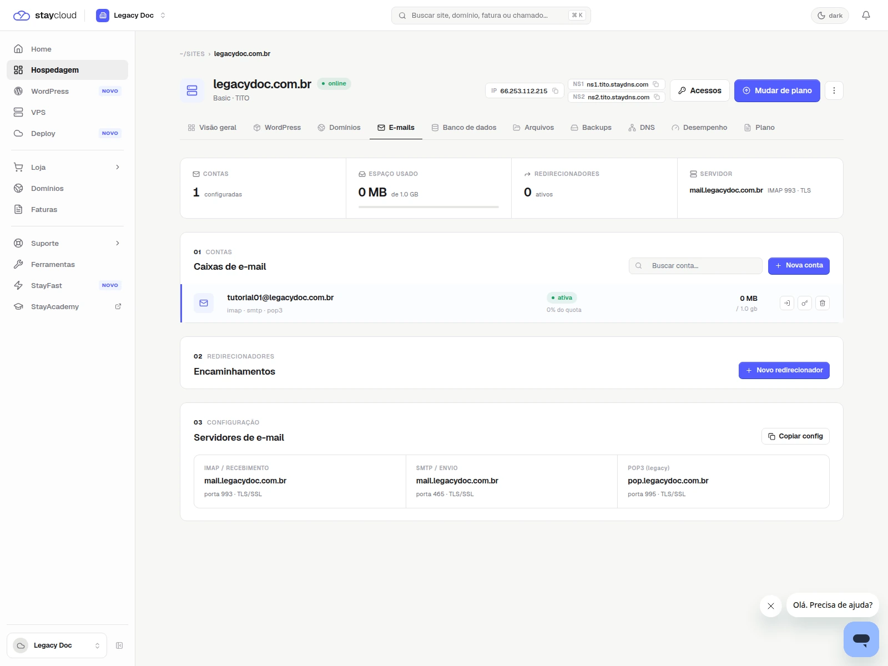
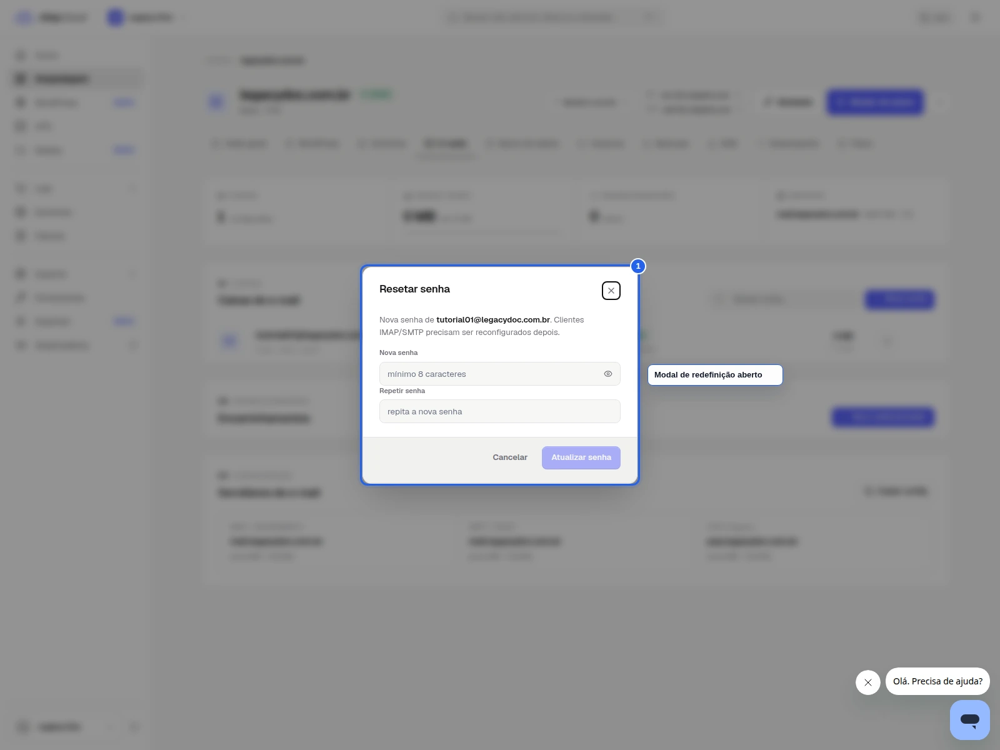
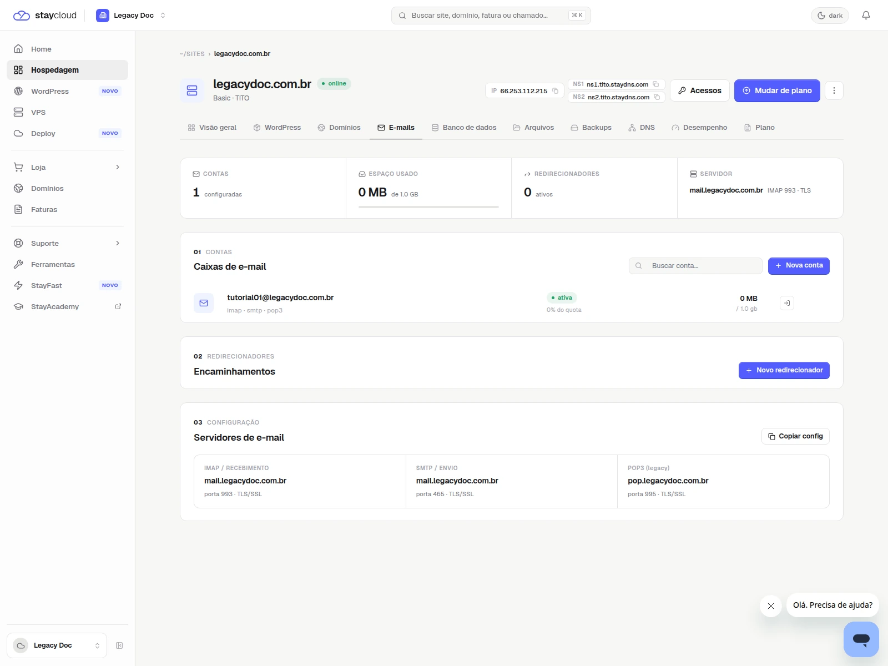

StayCloud · Painel Novo · lote 01
Como alterar a senha de e-mail no Painel Novo da StayCloud
Aprenda a localizar sua conta de e-mail e alterar a senha no Painel Novo com mais segurança.
Rascunho local
como alterar a senha de e-mail no Painel Novo da StayCloud
como-alterar-senha-email-painel-novo-staycloud
rascunho local
Objetivo
Aprenda a localizar sua conta de e-mail e alterar a senha no Painel Novo com mais segurança.
1. Abra a hospedagem correta
Entre no Painel Novo e localize a hospedagem onde a conta de e-mail está cadastrada.

2. Acesse a área de e-mails
Na hospedagem, abra a área de e-mails para ver as contas disponíveis.

3. Escolha a conta correta
Confirme o endereço antes de iniciar a troca da senha.

4. Redefina a senha
Use a ação disponível para alterar a senha e confirme a atualização.

5. Confirme a alteração concluída e a configuração relacionada
Mostre a confirmação final sem expor a senha nova ou qualquer dado sensível. Se você também precisar configurar o aplicativo de e-mail, use a visão de configuração do servidor como referência complementar.

Alertas e apoio
Ocultar senha atual e nova senha. Não capturar cookies, token ou sessões. Não mostrar dados de outra conta.
Quando abrir ticket
- se a conta de e-mail não aparecer;
- se a hospedagem não mostrar a área de e-mail;
- se sua conta não permitir alterar a senha;
- se o sistema mostrar erro ao salvar a nova senha.
Checklist visual e editorial
- objetivo claro em poucos segundos
- ordem dos passos lógica
- prints com contexto suficiente
- marcações visuais úteis e sem poluição
- linguagem simples para a leitura final